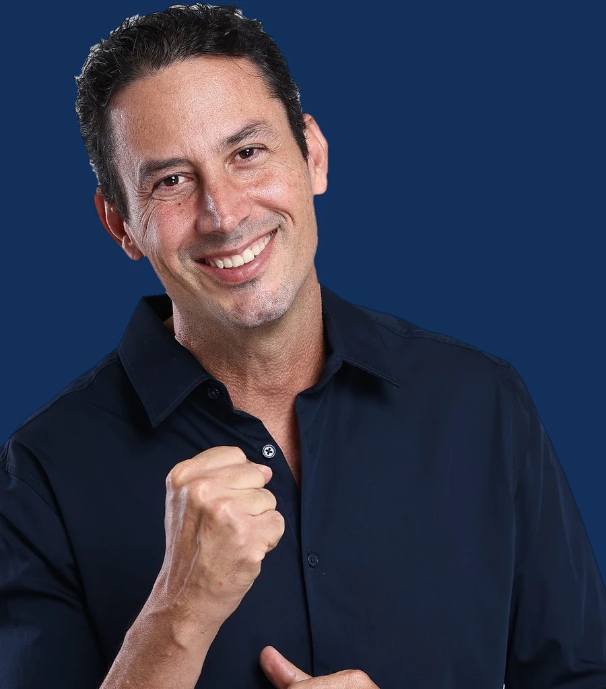

Cidade segura
Mais iluminação, câmeras, recuperação de áreas degradadas, manejo adequado do lixo e cuidado permanente de praças, parques, áreas comerciais e espaços de convivência.
Deputado Distrital · Distrito Federal · 2026

Ordem sem medo
Quase 30 anos de Polícia Militar. Comandei o 7º e o 3º Batalhão. Conheço essas regiões por dentro: quando estão cheias e quando ficam vazias.
9 regiões, uma cidade só
Segurança não é assunto abstrato. Ela aparece na hora de chegar em casa, abrir o comércio e caminhar pela própria quadra. Escolha a sua região e veja a pauta dela.
Deslize para ver as nove regiões
E em todas elas, três compromissos
Mais iluminação, câmeras, recuperação de áreas degradadas, manejo adequado do lixo e cuidado permanente de praças, parques, áreas comerciais e espaços de convivência.
Segurança, assistência social e fiscalização atuando de forma integrada para enfrentar ocupações irregulares, recuperar espaços públicos e proteger moradores e comerciantes.
Valorizar quem está na linha de frente e ampliar a integração entre as forças do DF e as federais. Criar o Observatório Distrital de Segurança, usando dados para orientar ações contra o crime organizado.

Minha história
Sou brasiliense, nascido em 1º de outubro de 1976. Cresci aqui, numa família que me ensinou cedo que respeito e trabalho não se negociam. Foi essa criação que me levou à farda, e é ela que ainda hoje orienta cada decisão que tomo.
Entrei na Polícia Militar do Distrito Federal em 1998 e concluí o Curso de Formação de Oficiais três anos depois. Passei pelo Batalhão de Trânsito, fui instrutor de tiro, servi na Força Nacional de Segurança Pública em missão no Rio de Janeiro e me especializei em negociação de crises, atuando em ocorrências com reféns e pessoas em situação de risco.
Por mais de dez anos fui porta-voz da PMDF, no centro da relação entre a corporação e a imprensa. Depois veio o comando: o 7º Batalhão, de Cruzeiro, Sudoeste e Octogonal, e o 3º Batalhão, de Asa Norte, Noroeste e SAAN.
Sou casado com a jornalista Natalie Machado Bueno, sou pai e padrasto, e é em casa que encontro o motivo de tudo isso. Quem tem filho entende o que é sair de casa e querer que a rua lá fora seja segura para ele. Católico praticante, acredito que servir ao próximo é missão, não cargo.
O gesto que decide
No dia 4 de outubro, o primeiro número que a urna pede é o de deputado distrital. Digite 20122 aqui e veja exatamente o que vai aparecer na tela.
Número:
Nome: Coronel Michello
Partido: PODEMOS
Aperte a tecla:
CONFIRMA para confirmar este voto
CORRIGE para digitar novamente
Voto registrado no treino
20122
Fatos com fonte
Quatro fatos com link para o veículo que publicou. Nenhum deles foi produzido pela campanha.
Junho de 2024, Asa Norte. Subiu ao segundo andar tomado por fumaça, ouviu o pedido de socorro de uma senhora de 91 anos e a carregou para fora. Voltou para procurar o gato dela e ajudou a conter o fogo até os bombeiros chegarem.
Quando saiu do comando do 7º BPM, moradores e comerciantes do Sudoeste, do Cruzeiro e da Octogonal se mobilizaram contra a transferência. O movimento ganhou nome próprio na imprensa local: "Fica, Michello".
Região sob responsabilidade do 3º Batalhão, que ele comanda desde julho de 2025. O levantamento local registrou a queda das ocorrências no bairro ao longo do ano.
À frente da comunicação social desde 2014, construiu o canal de confiança entre a corporação e a imprensa do DF. Na troca de comando do 7º BPM, a então comandante-geral Coronel Ana Paula Barros afirmou diante da tropa o quanto foi difícil tirá-lo da função.
Já publicaram sobre ele
Veja com seus olhos
Financiamento coletivo
Esta campanha se sustenta com a doação de quem acredita no trabalho. Qualquer valor entra pelo QueroApoiar, plataforma de vaquinha eleitoral homologada pelo TSE, com a lista de doações aberta para consulta pública.
Agora é com você
Um formulário curto e a campanha ganha mais uma pessoa na rua. É assim que uma candidatura sem máquina cresce: de gente em gente.
Cadastro oficial da campanha. Você entra na rede de apoiadores e recebe as novidades em primeira mão.
Abra o filtro oficial, tire a foto e publique nos stories. Um amigo seu vê e já sabe o número.
Acompanhe o dia a dia
Ordem sem medo
20122
Coronel Michello · Deputado Distrital · Podemos · 4 de outubro